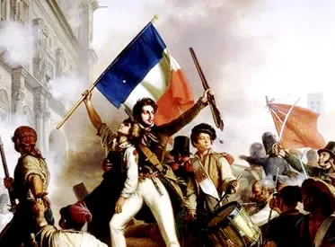

Com a recente reunião de reis absolutistas, existe boatos de informações repassadas pelos líderes, em que estão em busca de um estado com ideais nacionalistas, ou seja, a ideia de união (em costumes, língua, cultura, tradição) é fortificada, a ideia dos reis é de conseguirem se manter no poder com a união estável de seu povo, e que o trauma de Napoleão acabe para esses reis